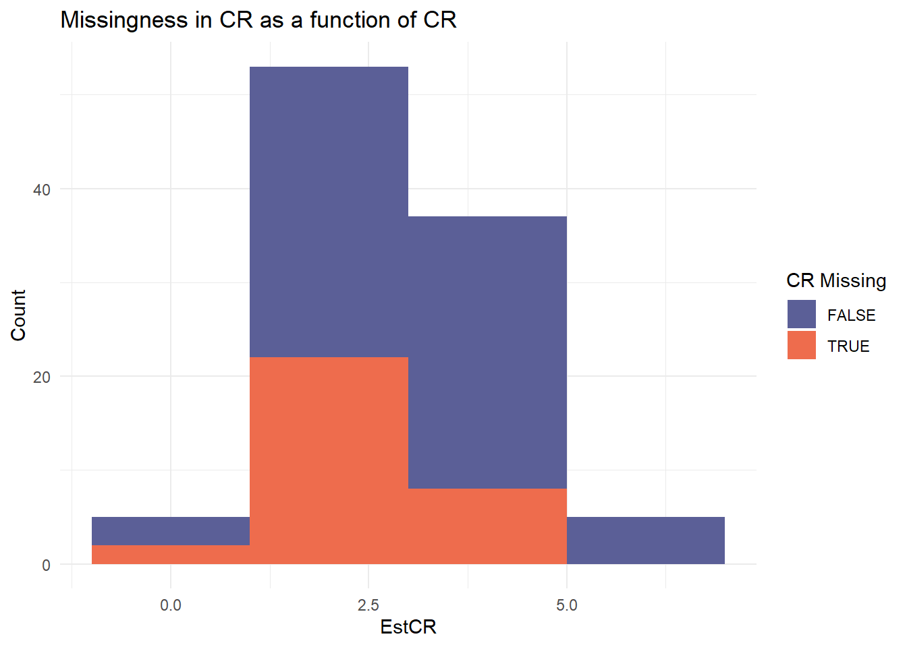

This is mixmeta 1.2.0. For an overview type: help('mixmeta-package').
Code
library(dplyr)
Caricamento pacchetto: 'dplyr'
I seguenti oggetti sono mascherati da 'package:stats':
filter, lag
I seguenti oggetti sono mascherati da 'package:base':
intersect, setdiff, setequal, union
Code
S =100N =1000Mu =c(0, 0)Tau =c(1, 1)rho =0.7Sigma =diag(Tau) %*%matrix(c(1, rho, rho, 1), nrow =2) %*%diag(Tau)RTher =rmvnorm(S, Mu, Sigma)b0 =rnorm(S, mean =20, sd =2)b1 =rnorm(S, mean =0.5, sd =0.2)b2 =rnorm(S, mean =1.5, sd =0.3)b3 =3dat =list()for (i in1:S) { minA =runif(1, min =18, max =65) maxA =runif(1, min = minA +5, max =90) Age =runif(N, min = minA, max = maxA) pFem =0.45 Sex =rbinom(N, size =1, prob = pFem) Ther =rbinom(N, size =1, prob =0.5) CR =rnorm(N, mean = b0 + b1*Age + b2*Sex + (b3 + RTher[i, 1])*Ther, sd =5) SR =rnorm(N, mean = b0 + b1*Age + b2*Sex + (b3 + RTher[i, 2])*Ther, sd =9) dat[[i]] =data.frame(Study = i,Age = Age,Sex =factor(Sex, levels =0:1, labels =c("M", "F")),Ther =factor(Ther, levels =0:1, labels =c("New", "Std")),CR = CR,SR = SR )}d =do.call(rbind, dat)head(d)
Study Age Sex Ther CR SR
1 1 67.36459 F Std 52.47243 45.48393
2 1 68.97595 M Std 52.79230 67.67739
3 1 81.31567 M Std 88.69081 95.11861
4 1 76.69579 M Std 70.26343 86.81718
5 1 72.29053 M Std 49.52922 49.58508
6 1 76.25966 M Std 68.90346 62.34308
Calculate effect sizes with Seemingly Unrelated Regressions
Code
library(systemfit)data <-data.frame(CR_Therapy =numeric(S),SR_Therapy =numeric(S),theta_1 =numeric(S),theta_2 =numeric(S),theta_12 =numeric(S),cor =numeric(S))for (s in1:S) { Sn <- d[d$Study == s, ] m1 <- CR ~ Age + Sex + Ther m2 <- SR ~ Age + Sex + Ther fitsur <-systemfit(list(CR = m1, SR = m2), "SUR", data = Sn) sum <-summary(fitsur) data$CR_Therapy[s] <- sum$coefficients[4, 1] data$SR_Therapy[s] <- sum$coefficients[8, 1] data$theta_1[s] <- sum$coefficients[4, 2] data$theta_2[s] <- sum$coefficients[8, 2] data$cor[s] <- sum$residCor["CR", "SR"]}dat =as.data.frame(cbind(1:S, N, data$CR_Therapy, data$SR_Therapy, data$theta_1, data$theta_2, data$cor))colnames(dat) <-c("Study", "N", "EstCR", "EstSR", "SECR", "SESR", "Cor.ws")head(dat)
ggplot(dmar, aes(x = sub$meanA, fill =is.na(EstCR))) +geom_histogram(binwidth =2, position ="stack") +labs(title ="Missingness in CR as a function of Age", x ="Age", y ="Count") +scale_fill_manual(values =c("#5B5F97", "#EE6C4D"), name ="CR Missing") +theme_minimal()
Missing Not At Random (MNAR)
Code
## Missing Not At Random (focused) ####beta0 =0beta1 =0.30# lower EstCR -> lower prob of CR being observeddmnar = datlikObs =1/ (1+exp(-(beta0 + beta1 * dmnar$EstCR)))M0 <-rbinom(S, size =1, prob = likObs)for (i in1:S) {if (M0[i] ==0) { dmnar$EstCR[dat$Study == i] <-NA }}head(dmnar)
ggplot(dmnar, aes(x = dat$EstCR, fill =is.na(EstCR))) +geom_histogram(binwidth =2, position ="stack") +labs(title ="Missingness in CR as a function of CR", x ="EstCR", y ="Count") +scale_fill_manual(values =c("#5B5F97", "#EE6C4D"), name ="CR Missing") +theme_minimal()

Random generator for continuous missing data
Tentative
Code
## Uniform distribution ####results <-list()iter <-10dmcar_orig <- dmcar # for (i in 1:iter) {# # dmcar = dmcar_orig# # unif_cr = runif(sum(is.na(dmcar$EstCR)), min = -max(d$CR), max = max(d$CR))# unif_sr = runif(sum(is.na(dmcar$EstSR)), min = -max(d$SR), max = max(d$SR))# # dmcar$EstCR[is.na(dmcar$EstCR)] = unif_cr# dmcar$EstSR[is.na(dmcar$EstSR)] = unif_sr# # theta = cbind(dmcar$EstCR, dmcar$EstSR)# # Sigma = cbind(dmcar$SECR^2, cor2cov(dmcar$SECR, dmcar$SESR, dmcar$Cor.ws), # dmcar$SESR^2)# # # mv.c = mixmeta(theta, Sigma, method = "reml")# # results[[i]] = mv.c$coefficients# }# # do.call(rbind, results)
Source Code
---title: "sim1"date: 'today'format: html: code-fold: true code-tools: trueeditor: visual---# Generate data```{r}library(mvtnorm)library(mixmeta)library(dplyr)S =100N =1000Mu =c(0, 0)Tau =c(1, 1)rho =0.7Sigma =diag(Tau) %*%matrix(c(1, rho, rho, 1), nrow =2) %*%diag(Tau)RTher =rmvnorm(S, Mu, Sigma)b0 =rnorm(S, mean =20, sd =2)b1 =rnorm(S, mean =0.5, sd =0.2)b2 =rnorm(S, mean =1.5, sd =0.3)b3 =3dat =list()for (i in1:S) { minA =runif(1, min =18, max =65) maxA =runif(1, min = minA +5, max =90) Age =runif(N, min = minA, max = maxA) pFem =0.45 Sex =rbinom(N, size =1, prob = pFem) Ther =rbinom(N, size =1, prob =0.5) CR =rnorm(N, mean = b0 + b1*Age + b2*Sex + (b3 + RTher[i, 1])*Ther, sd =5) SR =rnorm(N, mean = b0 + b1*Age + b2*Sex + (b3 + RTher[i, 2])*Ther, sd =9) dat[[i]] =data.frame(Study = i,Age = Age,Sex =factor(Sex, levels =0:1, labels =c("M", "F")),Ther =factor(Ther, levels =0:1, labels =c("New", "Std")),CR = CR,SR = SR )}d =do.call(rbind, dat)head(d)```## Calculate effect sizes with Seemingly Unrelated Regressions```{r, message = FALSE}library(systemfit)data <-data.frame(CR_Therapy =numeric(S),SR_Therapy =numeric(S),theta_1 =numeric(S),theta_2 =numeric(S),theta_12 =numeric(S),cor =numeric(S))for (s in1:S) { Sn <- d[d$Study == s, ] m1 <- CR ~ Age + Sex + Ther m2 <- SR ~ Age + Sex + Ther fitsur <-systemfit(list(CR = m1, SR = m2), "SUR", data = Sn) sum <-summary(fitsur) data$CR_Therapy[s] <- sum$coefficients[4, 1] data$SR_Therapy[s] <- sum$coefficients[8, 1] data$theta_1[s] <- sum$coefficients[4, 2] data$theta_2[s] <- sum$coefficients[8, 2] data$cor[s] <- sum$residCor["CR", "SR"]}dat =as.data.frame(cbind(1:S, N, data$CR_Therapy, data$SR_Therapy, data$theta_1, data$theta_2, data$cor))colnames(dat) <-c("Study", "N", "EstCR", "EstSR", "SECR", "SESR", "Cor.ws")head(dat)```## Multivariate meta-analysisCheck to see whether I can recover everything I set above.```{r}## Multivariate meta-analysis ####theta <-cbind(dat$EstCR, dat$EstSR)cor2cov =function(sd1, sd2, rho) {sd1 * sd2 * rho}Sigma =cbind(dat$SECR^2, cor2cov(dat$SECR, dat$SESR, dat$Cor.ws), dat$SESR^2)mv.c <-mixmeta(theta, Sigma, method="reml")summary(mv.c)```# Generate missing data## Missing Completely At Random (MCAR)```{r}## Missing Completely At Random ####mrate =0.1size = S*mrateM_cr =sample(S, size=size, replace=T)M_sr =sample(setdiff(1:S, M_cr), size = size, replace =FALSE)dmcar <- dat %>%mutate(EstCR =ifelse(Study %in% M_cr, NA, EstCR),SECR =ifelse(Study %in% M_cr, NA, SECR),EstSR =ifelse(Study %in% M_sr, NA, EstSR),SESR =ifelse(Study %in% M_sr, NA, SESR),Cor.ws =ifelse(Study %in% M_cr | Study %in% M_sr, NA, Cor.ws) )library(ggplot2)ggplot(dmcar, aes(x = dat$EstCR, fill =is.na(EstCR))) +geom_histogram(binwidth =2, position ="stack") +labs(title ="Missingness in CR", x ="EstCR", y ="Count") +scale_fill_manual(values =c("#5B5F97", "#EE6C4D"), name ="CR Missing") +theme_minimal()head(dmcar)sum(is.na(dmcar$EstCR))sum(is.na(dmcar$EstSR))```## Missing At Random (MAR)```{r}## Missing At Random ####sub <- d %>%group_by(Study) %>%summarise(meanA =mean(Age))beta0 =10beta1 =-0.15# higher age -> lower prob of CR being observedsub$likObs =1/ (1+exp(-(beta0 + beta1 * sub$meanA)))M0 <-rbinom(S, size =1, prob = sub$likObs)dmar = datfor (i in1:S) {if (M0[i] ==0) { dmar$EstCR[dat$Study == i] <-NA }}head(dmar)ggplot(dmar, aes(x = sub$meanA, fill =is.na(EstCR))) +geom_histogram(binwidth =2, position ="stack") +labs(title ="Missingness in CR as a function of Age", x ="Age", y ="Count") +scale_fill_manual(values =c("#5B5F97", "#EE6C4D"), name ="CR Missing") +theme_minimal()```## Missing Not At Random (MNAR)```{r}## Missing Not At Random (focused) ####beta0 =0beta1 =0.30# lower EstCR -> lower prob of CR being observeddmnar = datlikObs =1/ (1+exp(-(beta0 + beta1 * dmnar$EstCR)))M0 <-rbinom(S, size =1, prob = likObs)for (i in1:S) {if (M0[i] ==0) { dmnar$EstCR[dat$Study == i] <-NA }}head(dmnar)ggplot(dmnar, aes(x = dat$EstCR, fill =is.na(EstCR))) +geom_histogram(binwidth =2, position ="stack") +labs(title ="Missingness in CR as a function of CR", x ="EstCR", y ="Count") +scale_fill_manual(values =c("#5B5F97", "#EE6C4D"), name ="CR Missing") +theme_minimal()```# Random generator for continuous missing dataTentative```{r}## Uniform distribution ####results <-list()iter <-10dmcar_orig <- dmcar # for (i in 1:iter) {# # dmcar = dmcar_orig# # unif_cr = runif(sum(is.na(dmcar$EstCR)), min = -max(d$CR), max = max(d$CR))# unif_sr = runif(sum(is.na(dmcar$EstSR)), min = -max(d$SR), max = max(d$SR))# # dmcar$EstCR[is.na(dmcar$EstCR)] = unif_cr# dmcar$EstSR[is.na(dmcar$EstSR)] = unif_sr# # theta = cbind(dmcar$EstCR, dmcar$EstSR)# # Sigma = cbind(dmcar$SECR^2, cor2cov(dmcar$SECR, dmcar$SESR, dmcar$Cor.ws), # dmcar$SESR^2)# # # mv.c = mixmeta(theta, Sigma, method = "reml")# # results[[i]] = mv.c$coefficients# }# # do.call(rbind, results)```